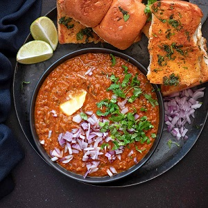

Pav Bhaji is a popular Indian street food dish from Mumbai, consisting of a thick, spiced
vegetable
gravy served with soft, buttered bread rolls (pav). The bhaji, or vegetable mixture, is
typically
made with potatoes, tomatoes, peas, and other vegetables, seasoned with spices and a touch of
butter. The pav is usually toasted on a griddle and buttered for a delicious, flavorful
experience

Click to image for pav bhaji recipe
Click To view ingredients
Ingredients
Quantity
Potatoes (boiled & mashed)
2 cups
Cauliflower (finely chopped)
1 cup
Green peas
0.5 cup
Capsicum (finely chopped)
0.5 cup
Onions (finely chopped)
1 cup
Tomatoes (finely chopped)
1.5 cup
Ginger-Garlic paste
1 tbsp
Pav Bhaji Masala
2 tbsp
Red chili powder
1 tsp
Butter
2-3 tbsp
Salt
To Teste
Lemon wedges
2-3
Fresh coriander (chopped)
2 tbsp
Pav (buns)
4-6
Pav Bhaji Interaction
Boil potatoes, cauliflower, and green peas until
soft. Mash them and keep aside.
In a large pan, heat 2 tbsp of butter. Add chopped
onions and sauté until golden brown.
Add 1 tbsp of ginger-garlic paste and
sauté for a minute until the raw smell goes away.
Add finely chopped tomatoes and cook until they turn
soft and mushy.
Add pav bhaji masala, red chili powder, and salt. Mix
well and cook for 2-3 minutes.
Now add the boiled and mashed vegetables to the
masala. Mix thoroughly.
Use a potato masher to mash the mixture while
cooking. Add a little water to adjust consistency and simmer for 8-10 minutes.
Add a bit of butter and chopped coriander leaves. Mix well
and remove from heat.
Slit pav (buns) in half and toast on a tawa with butter
until golden and crisp.
Serve hot bhaji with buttered pav, lemon wedges, and chopped
onions.